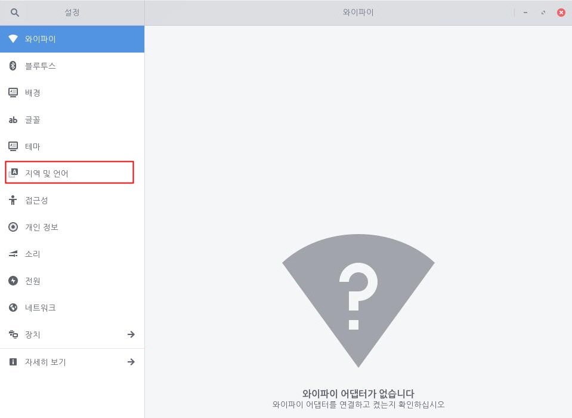
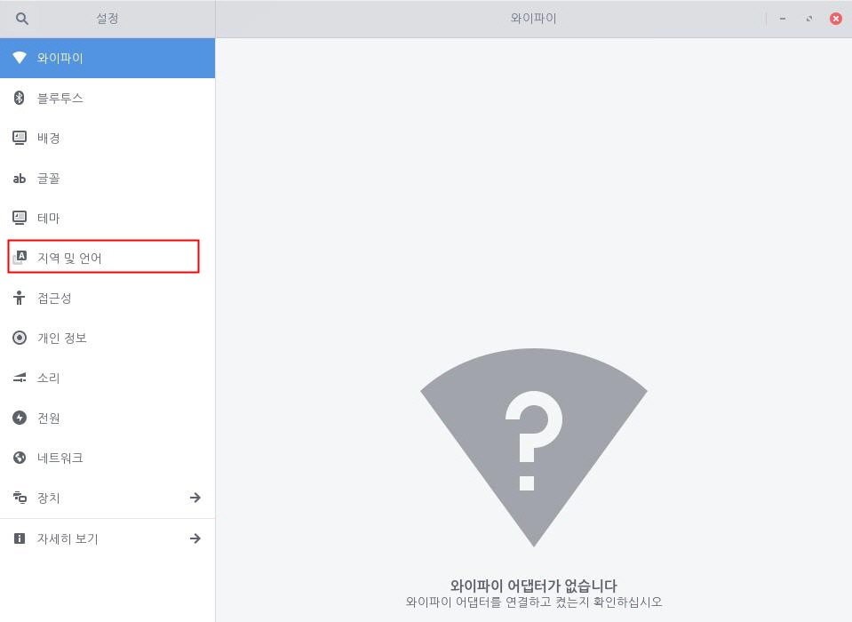

사용자는 자신에게 적합한 언어 팩을 설치하여 사용할 수 있습니다. 기본적으로 영어와 한국어 팩이 제공되며 한국어로 기본 설정되어 있습니다. 다음 단계를 수행하여 사용 언어를 변경합니다.1. 좌측 하단의 [시작]아이콘을 클릭하고 검색 창에 "설정"을 입력한 후 [설정] 애플리케이션을 실행합니다.
 2. [설정] 애플리케이션 사이드 바에서 [지역 및 언어]를 클릭합니다.
2. [설정] 애플리케이션 사이드 바에서 [지역 및 언어]를 클릭합니다.
 3. [언어]에서 원하는 언어를 검색하여 선택합니다.변경 내용을 적용하려면 시스템을 다시 시작해야 합니다. 일부 언어에 대한 번역은 품질이 낮을 수 있으며, 특정 애플리케이션은 설정한 언어를 지원하지 않을 수도 있습니다. 선택한 언어로 번역되지 않은 일부 인터페이스는 개발할 때 설정된 언어로 표시됩니다. 원하는 국가나 언어가 없는 경우 아래 명령어를 입력하여 추가할 수 있습니다.sudo vim /etc/locale.gen원하는 국가나 언어를 추가하거나 주석을 제거한 후 아래 명령어를 입력하여 시스템을 다시 시작합니다.sudo locale-gen이제 변경된 언어를 확인할 수 있습니다.
3. [언어]에서 원하는 언어를 검색하여 선택합니다.변경 내용을 적용하려면 시스템을 다시 시작해야 합니다. 일부 언어에 대한 번역은 품질이 낮을 수 있으며, 특정 애플리케이션은 설정한 언어를 지원하지 않을 수도 있습니다. 선택한 언어로 번역되지 않은 일부 인터페이스는 개발할 때 설정된 언어로 표시됩니다. 원하는 국가나 언어가 없는 경우 아래 명령어를 입력하여 추가할 수 있습니다.sudo vim /etc/locale.gen원하는 국가나 언어를 추가하거나 주석을 제거한 후 아래 명령어를 입력하여 시스템을 다시 시작합니다.sudo locale-gen이제 변경된 언어를 확인할 수 있습니다.